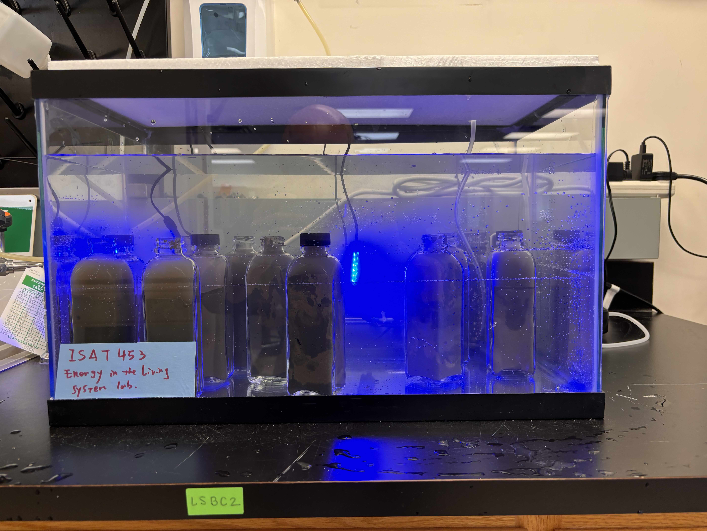

Classroom Moments



My teaching philosophy centers on creating an inclusive, student-driven learning environment where curiosity and practical engagement are paramount. I emphasize connecting theoretical knowledge to real-world applications in environmental engineering and bioelectrochemical systems, encouraging students to explore complex ideas through hands-on projects, interdisciplinary collaboration, and problem-solving exercises. Continuous improvement through student feedback is key to my approach, aiming to meet diverse learning needs while nurturing a supportive classroom. Above all, I view my role as facilitating growth in students’ skills, confidence, and teamwork, preparing them to become adaptable, resilient engineers and scientists.